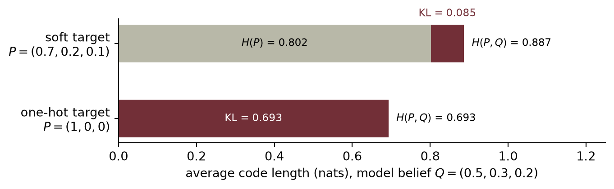

import torch
import matplotlib.pyplot as plt
# [1]
o = torch.linspace(-6, 6, 300)
sigmoid_response = torch.sigmoid(o)2 Linear Models that Classify: Logistic and Softmax
Regression predicts numbers; most of what the world wants predicted is categories: cat or dog, spam or not, which of ten digits. This chapter converts the linear machinery of Chapter 1 into a classifier without discarding a single idea: the same weighted sums, the same maximum-likelihood recipe for the loss, the same gradient descent. What changes is one squashing function at the output, and it changes less than you might think.
2.1 What actually changes
Return to the computation circuit in Figure 1.7. Keep every weighted input and the bias, but now call the circuit’s output a raw score \(o\). Classification adds one operation after that score; the weighted-sum machinery itself stays intact.
In regression, \(y \in \R\) and the Gaussian noise model handed us the MSE (Chapter 1). In classification, \(y\) is a label from \(\{0, \dots, K-1\}\). Could we just regress onto the labels with MSE anyway? We could, and it fails for a principled reason: the loss is a noise model, and Gaussian is the wrong model for a coin flip. A binary outcome deviates from its probability like a Bernoulli variable, not like additive Gaussian noise \(\rightarrow\) maximum likelihood demands a different loss. Everything in this chapter falls out of taking that seriously.
What we need is two things:
- a way to turn the model’s raw score (its logit, \(o \in \R\)) into a probability,
- a loss that measures how wrong a probability is.
The linear map that produces those raw scores has a name worth learning now: it is the model’s head, here a classification head. It is the last layer, and its job is to turn whatever representation reaches it into task-specific logits.
2.2 Binary classification
From score to probability: the sigmoid
Our linear model produces \(o = \vect{w}^\top\vect{x} + b\), an unbounded score. The sigmoid squashes it into a probability:
\[ \sigma(o) = \frac{1}{1 + e^{-o}} . \tag{2.1}\]
- Evaluate the sigmoid across a range of logits.

Watch the mechanism: crossing the line
One example walks across the decision boundary. What is its probability at the moment it touches the line — and does the next equal step buy as much?
The curve above, drawn over the same score range −6 to 6, read from the side the chapter does not draw: a small schematic input plane with a straight boundary, one tracked example x, its score o, and its probability \(\predictionpart{\hat p}\).
\( o = \parameterpart{\vect{w}^\top}\featurepart{\vect{x}} + \parameterpart{b} \) \( \predictionpart{\hat p} = \sigma(o) = \dfrac{1}{1 + \class{sq-tail}{e^{-o}}} \) \( \class{sq-zero}{o = 0} \iff \predictionpart{\hat p} = \class{sq-half}{\tfrac{1}{2}} \)
Two more equal pushes. The last buys 0.0294 — about an eighth of the first.
The calculation is readable without playback. Opening this panel loads the optional controls.
Nothing here is trained: the boundary is given, not learned, and the sigmoid is monotone, so it grades distance from that boundary without ever moving it.
Scope and caveats
The plane, its two labelled clusters, the weight vector and the bias are declared schematic geometry, not numbers this chapter prints; the sigmoid, its midpoint, the identity between a score of zero and a probability of one half and the score range −6 to 6 are the chapter's. A probability here is the model's output, not a measured frequency: no example on this plane has been counted. The score is the signed distance from the boundary times ‖w‖₂ = 2.5, so equal steps along the blue path are equal steps in o; the blue segment on the plane, the tick on the score axis and the point on the curve are one example seen three times, which is why they share a colour. Purple marks the labels y the clusters carry — squares for 0, discs for 1 — and the shapes, not the colour, carry that distinction. The score is the scene's one control; the timeline sweeps it and a drag is a detour.
Check yourself. Double every weight and the bias — take w to (3.0, 4.0) and b to −1.0. Where does the decision boundary move, and what happens to the probability at the point that scored 1?
The boundary does not move at all: doubling scales every score, so the set where the score is zero is the same straight line. But that point's score doubles to 2, and its probability rises from 0.7311 to 0.8808. Scaling sharpens confidence without bending the boundary.
Transcript and keyboard help
- One example is tracked three times over: a blue dot on the class-0 side of the plane, a tick at o = −4.00 on the score axis, and a point on the sigmoid reading \(\predictionpart{\hat p}\) = 0.0180.
- It moves straight along the boundary's normal toward the line. The score rises to −1.00 and the probability climbs to 0.2689.
- Held one step short of the line. Predict the score and the probability at the line before releasing it.
- Released; it slides the last step and comes to rest exactly on the boundary.
- On the line the score is exactly 0 and the probability is exactly 0.5000. The dashed guides light up together: the boundary in the plane, o = 0 on the score axis, \(\predictionpart{\hat p}\) = ½ on the probability axis are one statement seen three times.
- The first equal push: the example moves one step further along the same line, the score reaches 1.00 and the probability gains 0.2311.
- The same push again. The score reaches 2.00 and this push gains only 0.1497.
- Two more equal pushes, to 3.00 and 4.00, gaining 0.0718 and then 0.0294. The four marks on the probability axis crowd together while the four marks on the plane stay evenly spaced: equal steps in the score are not equal steps in the probability.
Silent; paused initially; 1.5× playback. Focus the animation pane: Space or K plays/pauses, arrows seek between beats, Home/End jump, Escape pauses. The scrubber, the speed menu and the score slider also work by keyboard; the slider's own keys never move the timeline. Reduced-motion mode holds each beat's state instead of moving between them.
Notice what did not change: the decision boundary \(\hat{p} = \tfrac{1}{2}\) is exactly \(o = 0\), i.e. \(\vect{w}^\top\vect{x} + b = 0\), the same hyperplane geometry from Chapter 1, with \(\vect{w}\) still the template the input is scored against. The sigmoid does not bend the boundary; it grades our confidence on either side of it.
The loss: cross-entropy from maximum likelihood
Run the maximum-likelihood recipe with the correct noise model. If the label is a coin flip with \(P(y{=}1 \mid \vect{x}) = \hat{p}\), the likelihood of the dataset is \(\prod_i \hat{p}_i^{\,y_i}(1-\hat{p}_i)^{1-y_i}\); taking the negative log gives the binary cross-entropy:
\[ \loss_{\text{BCE}} = -\bigl[\, y \log \hat{p} + (1 - y)\log(1 - \hat{p}) \,\bigr]. \tag{2.2}\]
Read it as surprise: if the true label is 1, the loss is \(-\log \hat{p}\). It is small when the model believed in the outcome and explodes as that belief goes to zero. A confident wrong answer is punished without mercy, which is exactly the pressure a probability deserves.
Watch the mechanism: the price of being sure and wrong
One example is truly labelled 1, and the model's belief in it slides toward zero. Equal steps down in belief — does every step cost the same?
The chapter's binary cross-entropy drawn as a picture: the belief \(\predictionpart{\hat p}\) along the bottom, the loss it buys up the side, and the (1 − y) branch drawn as the ghost it becomes once the label is hard.
\( \loss_{\text{BCE}} = -\bigl[\, \class{sl-live}{\targetpart{y} \log \predictionpart{\hat p}} + \class{sl-dead}{(1 - \targetpart{y})\log(1 - \predictionpart{\hat p})} \,\bigr] \) \( \targetpart{y} = 1 \;\Rightarrow\; \residualpart{\loss} = -\log \predictionpart{\hat p} \) \( \residualpart{\loss}\bigl(\tfrac{1}{2}\bigr) = \class{sl-hedge}{\log 2} \)
Every halving costs one more log 2. Belief can halve forever; the loss cannot stop.
The calculation is readable without playback. Opening this panel loads the optional controls.
Cross-entropy is not a distance and not a probability: the belief is bounded by 1, the loss is not bounded at all, and nothing here is trained.
Scope and caveats
The formula and the reading of it as surprise are the chapter's; the belief's journey and every loss value are declared computed variants, recomputed from that formula and never retyped. The logarithm is natural, so a loss is in nats — the chapter's information-theory reading of the same quantity comes later, and nothing here is called a bit. Only one term is ever active for a hard label: with y = 1 the second term carries the factor (1 − y) = 0, so the dashed curve is drawn to be dismissed, not read. A loss is not a probability and a probability here is not a measured frequency: no example has been counted and no model has been fitted. The loss ruler stops at 5 because a drawing must stop somewhere; the loss does not, which is the whole point. Nothing on this picture is orange, because nothing in this scene is a learnable parameter — the belief is handed to us, and where it comes from is the sigmoid one section above. The gradient of this loss, the prediction error itself, is the next section's business and is deliberately absent. The belief is the scene's one control; the timeline sweeps it and a drag is a detour.
Check yourself. Two examples, both labelled 1. Model A believes 0.50 on each. Model B believes 0.90 on one and 0.10 on the other — the same average belief. Which model's total loss is lower?
Model A, by a wide margin. Two hedges cost 0.6931 twice, 1.3863 in all. Model B pays 0.1054 for the belief of 0.90 and 2.3026 for the belief of 0.10, 2.4079 together — the one confident mistake costs more than both hedges. Averaging beliefs does not average the loss.
Transcript and keyboard help
- One example, truly labelled 1, with a belief already in hand: \(\predictionpart{\hat p}\) = 0.9000. The wine arm under the curve is its loss, 0.1054. A second, dashed curve is the y = 0 term, which the factor (1 − y) = 0 switches off.
- The belief falls in equal steps of 0.20, to 0.7000 and then 0.5000. The two risers measure what each step cost: 0.2513, then 0.3365. The treads are the same width; the risers are not the same height.
- Halfway. The two curves cross here, so the loss is log 2 = 0.6931 whichever label is true — the price of admitting you do not know.
- The same two steps again, to 0.3000 and 0.1000. Those risers are 0.5108 and 1.0986: the last equal step costs more than four times the first one did.
- Held at 0.1000, loss 2.3026. Predict before releasing it: halving the belief to 0.05 — does that double the loss?
- Released. The belief halves to 0.0500 and the arm climbs.
- Not doubled: the riser is 0.6931, exactly log 2 and exactly as tall as the hedge. Halved again to 0.0250, and the riser is 0.6931 once more.
- Halved a third time, to 0.0125 and a loss of 4.3820. Every halving buys the same 0.6931 while the belief step itself halves; the treads shrink to nothing and the risers do not.
Silent; paused initially; 1.5× playback. Focus the animation pane: Space or K plays/pauses, arrows seek between beats, Home/End jump, Escape pauses. The scrubber, the speed menu and the belief slider also work by keyboard; the slider's own keys never move the timeline. Reduced-motion mode holds each beat's state instead of moving between them.
The beautiful gradient
Chain the sigmoid into the cross-entropy and differentiate with respect to the logit, and something remarkable drops out (Exercise 1 walks you through it):
\[ \frac{\partial \loss}{\partial o} = \hat{p} - y . \tag{2.3}\]
The gradient is literally the prediction error, the same form MSE gave us for regression. All the logs and exponentials annihilate each other. This is not luck, and it is not the last time you will see it.
2.3 Multiclass classification: softmax
With \(K\) classes, run \(K\) templates at once: \(\matr{W} \in \R^{K \times d}\) produces a score vector \(\vect{o} = \matr{W}\vect{x} + \vect{b}\), one logit per class.
TipThe first architectural block: the classification head
The linear map from an incoming representation to class scores is the classification head, also called a linear readout:
\[ \operatorname{head}(\featurepart{\vect{h}}) = \parameterpart{\matr{W}}\featurepart{\vect{h}} + \parameterpart{\vect{b}}, \qquad \parameterpart{\matr{W}} \in \R^{K \times d},\quad \parameterpart{\vect{b}} \in \R^{K}. \]
Its contract is narrow: take a \(d\)-dimensional representation \(\featurepart{\vect{h}}\), emit \(K\) logits \(\vect{o}\), and hand those logits straight to the loss. This chapter has no hidden layers yet, so the representation is the raw input, \(\featurepart{\vect{h}} = \featurepart{\vect{x}}\): here the whole model is the head.
Later models split into two parts. A backbone (also called the trunk) turns raw inputs such as pixels or tokens into a representation \(\featurepart{\vect{h}} = \phi_{\theta}(\featurepart{\vect{x}})\), and a small head reads the task’s answer off that representation. The backbone changes dramatically across the book, from multilayer perceptrons (Chapter 3) to convolutional stacks (Chapters 8 and 9) and Transformers (Chapters 14 to 16); the head usually stays this small linear map. Because the two are separate, either can be swapped. Adapting a pretrained model to new classes often keeps its backbone and trains only a fresh head (Chapters 9, 15, and 17), and one backbone can feed several heads at once: a softmax head for a label beside a linear-regression head for a coordinate.
To turn \(K\) scores into a probability distribution, exponentiate (making everything positive) and normalize:
\[ \hat{y}_j = \mathrm{softmax}(\vect{o})_j = \frac{e^{o_j}}{\sum_{k=1}^{K} e^{o_k}} . \tag{2.4}\]
Softmax has three properties worth committing to memory: every output is positive, the outputs sum to one, and, less obviously, it is invariant to constant shifts: adding the same \(c\) to every logit changes nothing, because \(e^{o_j + c} = e^c e^{o_j}\) and the \(e^c\) cancels top and bottom. Only the differences between scores matter.
- Compare softmax probabilities before and after a common logit shift.
# [1]
logits = torch.tensor([2.0, 0.5, -1.0, 1.0])
softmax_cases = [(shift, torch.softmax(logits + shift, dim=0))
for shift in (0.0, 100.0)]
Watch the mechanism: the shift that changes nothing
Add 100 to every logit — which probability changes?
These four scores are this chapter's softmax-shift-audit fixture, and the figure above draws exactly these two cases. The figure rounds each probability to two decimals; this panel carries four.
\( \displaystyle \predictionpart{\hat{y}_j} = \dfrac{\class{sm-num}{e^{\featurepart{o_j}\class{sm-c}{{}+c}}}}{\class{sm-den}{\sum_k e^{\featurepart{o_k}\class{sm-c}{{}+c}}}} \) \( \displaystyle {}= \dfrac{\class{sm-ec}{e^{c}}\,e^{\featurepart{o_j}}}{\class{sm-ec}{e^{c}}\sum_k e^{\featurepart{o_k}}} \)
Back at c = 0: 0.6095, 0.1360, 0.0303, 0.2242 — the same four probabilities at every shift.
The calculation is readable without playback. Opening this panel loads the optional controls.
Softmax is invariant to adding a constant, not to scaling one: multiplying every score by a factor would change the distribution.
Scope and caveats
Only the common shift c moves, on the timeline rather than under a control. These probabilities are computed from four fixed scores: no training, no data, and no learnable parameter, which is why nothing here is drawn in the colour reserved for one.
Check yourself. Subtract the largest logit, 2.0, from all four. What are the new logits, and what happens to the probabilities?
The logits become (0, −1.5, −3, −1) and the probabilities stay (0.6095, 0.1360, 0.0303, 0.2242): subtracting 2 is adding the constant −2. This is the standard stability trick — the largest exponent becomes e⁰ = 1, so nothing can overflow.
Transcript and keyboard help
- Four fixed scores: o₀ = 2.0, o₁ = 0.5, o₂ = −1.0, o₃ = 1.0. Before playing: after adding 100 to every one of them, which probability changes?
- Exponentiate: the four exponentials are 7.39, 1.65, 0.37 and 2.72, sharing the sum 12.12. (Computed, as this chapter's landmine section prescribes, by subtracting the largest score first; the ratio is the same.)
- Divide by the one shared sum: 0.6095, 0.1360, 0.0303, 0.2242, which add to 1.
- Add c to every score, sweeping c from 0 to 100: the score ticks slide up together, the blue bars scale by the same factor, and the green bars stay on their c = 0 dashes. At c = 100 the ruler is relabelled 99 to 107 and the same marks stand where they stood: only the differences between scores matter.
- Why: adding c to a score multiplies its exponential by one shared factor, and the same factor multiplies every term of the denominator, so it cancels top and bottom.
- Return to c = 0: the same four probabilities, 0.6095, 0.1360, 0.0303, 0.2242; o₀ stays the largest throughout.
Silent; paused initially; 1.5× playback. Focus the animation pane: Space or K plays/pauses, arrows seek between beats, Home/End jump, Escape pauses. The scrubber and speed menu also work by keyboard. Reduced-motion mode holds each beat’s state: c snaps straight from 0 to 100 on the relabelled ruler for the shift and cancel beats and back to 0 for the last, never a value in between.
TipRemember this machine: scores \(\rightarrow\) weights
Step back from classification for a moment. What softmax really is: a differentiable device that takes any list of scores and returns positive weights that sum to one, favoring the large scores without silencing the small ones. Today the scores are class logits. Much later, we will score how well one current request matches several stored candidates, then use the resulting weights to blend what those candidates contain. For now, keep only the reusable machine: scores \(\rightarrow\) positive weights that sum to one. One normalizer, the whole book long.
NoteWhat “differentiable” buys us: softening the hard
Gradient descent cannot follow a cliff.
Consider the obvious way to pick a class: take the \(\operatorname{argmax}\), then output a one-hot vector with 1 at the winning index and 0 elsewhere. (The scalar \(\max\) operation is different: it passes a gradient through its winning input.) Argmax-plus-one-hot is hard. Nudge a losing logit slightly and the output does not move at all; nudge it past the winner and the output jumps all at once. Its derivative is zero almost everywhere, so the selection gives gradient descent no local hint about which losing score was close, which was far, or how the weights should change.
Softmax is a smooth relaxation of that one-hot selection; the name is literal: a soft max. Instead of crowning one winner, it spreads belief according to the scores, and every logit keeps a nonzero path to the loss. It is two things at once: a proper categorical distribution, the one cross-entropy scores below, and a smooth stand-in for a discrete choice. We gave up a little decisiveness and bought trainability.
A temperature \(\tau > 0\) sets where on that continuum the model sits:
\[ \operatorname{softmax}(\vect{o}/\tau)_j = \frac{e^{o_j/\tau}}{\sum_{k=1}^{K} e^{o_k/\tau}} . \]
As \(\tau \to 0\) the distribution sharpens toward the hard winner; as \(\tau \to \infty\) it flattens toward uniform indifference; every value in between is smooth, so gradients reach every logit (Figure 2.3). If you have moved a “temperature” setting on a text generator, this is the same division: the generator divides its next-token logits by \(\tau\) and samples from the result. It is an entropy dial, not an imagination dial. Near \(\tau = 0\) sampling becomes greedy decoding, predictable and prone to repeating itself; at very large \(\tau\) it approaches uniform noise; in between, lower-ranked but plausible tokens occasionally win the draw.
Watch for this move; it is everywhere once you see it. Whenever a useful operation is discrete, such as a lookup, a yes/no branch, or even sorting a list (differentiable sorting exists), the play is the same: replace the hard decision with a smooth, temperature-controlled relaxation, train with gradients, and sharpen later if needed. The one to remember for this book is a hard memory lookup, where one address wins and every other row is ignored. In Part IV that single address becomes a softmax-weighted read across a whole bank of stored representations: the core of attention.
- Compare one hard selection with three temperature-softened distributions.
# [1]
logits_demo = torch.tensor([2.0, 1.0, 0.2, -0.5])
klasses = ["A", "B", "C", "D"]
hard = torch.zeros(4); hard[logits_demo.argmax()] = 1.0
temperatures = [0.5, 1.0, 4.0]
soft_cases = [torch.softmax(logits_demo / temp, dim=0) for temp in temperatures]
Cross-entropy, multiclass edition
With one-hot labels \(\vect{y}\) (all zeros except a 1 at the true class), the cross-entropy is
\[ \loss_{\text{CE}} = -\sum_{j=1}^{K} y_j \log \hat{y}_j = -\log \hat{y}_{\text{true class}}, \tag{2.5}\]
the surprise at the true class, again. And the gradient repeats its trick:
\[ \frac{\partial \loss}{\partial o_j} = \hat{y}_j - y_j , \tag{2.6}\]
prediction minus target, one more time. This recurrence is no coincidence: sigmoid/BCE and softmax/CE are both members of the exponential family paired with their natural losses, and that pairing always collapses the gradient to the error.
NoteThe information-theory reading: coding and surprise
Probability and compression are two readings of the same objective. With natural logs, lengths are measured in nats.
- Entropy \(H(P) = -\sum_j p_j \log p_j\) is the uncertainty in a distribution: the shortest average code length possible for symbols drawn from \(P\).
- Cross-entropy \(H(P, Q) = -\sum_j p_j \log q_j\) is the average code length when symbols from \(P\) are encoded with a code built for the model’s belief \(Q\).
The gap between them is the Kullback–Leibler (KL) divergence, the extra length paid for using the wrong code:
\[ H(P, Q) = H(P) + D_{\mathrm{KL}}(P \,\|\, Q), \qquad D_{\mathrm{KL}}(P \,\|\, Q) = \sum_j p_j \log \frac{p_j}{q_j} \;\ge\; 0 . \]
A one-hot label puts probability 1 on the true class, so it has no uncertainty: \(H(P) = 0\). For one-hot labels, then, cross-entropy is the KL divergence, and both reduce to the surprise at the truth, \(-\log q_{\text{true}}\) of Equation 2.5. Minimizing this loss is at once maximizing the categorical likelihood, minimizing the expected code length, and minimizing the KL divergence from the labels to the model.
When the target is itself a soft distribution, \(H(P)\) no longer vanishes. If \(P\) is fixed, cross-entropy and KL still differ only by that constant; the distinction starts to matter when the first argument moves too, as in the alignment penalty of Chapter 18 and the variational autoencoder of Chapter 19. Appendix E compares KL with other ways to compare distributions.

One numerical landmine
Computing \(e^{o_j}\) overflows once a logit reaches the high eighties in float32 (about 700 in float64), a scale training easily reaches. The fix exploits shift invariance: subtract the max logit before exponentiating (the log-sum-exp trick), which changes nothing mathematically and everything numerically. We will use it in the code below; the deeper story of floating-point limits lives in Appendix C.
2.4 Build it: three classes, from scratch
Now we assemble the full classifier on three Gaussian blobs. It has four pieces, all of which you have already met: three templates (one per class), the stable softmax, the cross-entropy loss, and the gradient. And since Equation 2.6 reduced that gradient to \(\hat{y} - y\), we can implement it by hand \(\rightarrow\) no autograd needed:
- Prepare the inputs and fixed settings for the example.
- Define the reusable
stable_softmaxhelper. - Apply the softmax cross-entropy gradient to all three templates.
- Report or visualize the measured result.
# [1]
torch.manual_seed(6050)
centers = torch.tensor([[-2.0, 0.0], [2.0, 0.0], [0.0, 2.5]])
X = torch.cat([c + 0.7 * torch.randn(150, 2) for c in centers]) # (450, 2)
y = torch.arange(3).repeat_interleave(150) # (450,)
Y = torch.nn.functional.one_hot(y, 3).float() # (450, 3)
# [2]
def stable_softmax(logits: torch.Tensor) -> torch.Tensor:
z = logits - logits.max(dim=-1, keepdim=True).values # shift invariance at work
e = torch.exp(z)
return e / e.sum(dim=-1, keepdim=True)
W, b = torch.zeros(3, 2), torch.zeros(3)
# [3]
for step in range(400):
P = stable_softmax(X @ W.T + b) # (450, 3) predicted probabilities
G = (P - Y) / len(X) # the beautiful gradient, eq. (6)
W -= 1.0 * G.T @ X # blame out x signal in
b -= 1.0 * G.sum(0)
P = stable_softmax(X @ W.T + b) # evaluate the final updated parameters
ce = -(Y * torch.log(P)).sum(1).mean()
acc = (P.argmax(1) == y).float().mean()
# [4]
print(f"cross-entropy {ce:.3f} accuracy {acc:.1%}")cross-entropy 0.033 accuracy 98.9%- Prepare the inputs and fixed settings for the example.
- Decision regions with confidence shading.
import numpy as np
# [1]
gx, gy = np.meshgrid(np.linspace(-4.5, 4.5, 300), np.linspace(-2.5, 5, 300))
grid = torch.tensor(np.stack([gx.ravel(), gy.ravel()], 1), dtype=torch.float32)
Pg = stable_softmax(grid @ W.T + b)
cls = Pg.argmax(1).reshape(gx.shape).numpy()
conf = Pg.max(1).values.reshape(gx.shape).numpy()
plt.figure(figsize=(6, 4.4))
plt.contourf(gx, gy, cls, levels=[-0.5, 0.5, 1.5, 2.5],
colors=["#DCE6F2", "#FDE3C8", "#E3EEE3"])
plt.contourf(gx, gy, 1 - conf, levels=12, cmap="Greys",
alpha=0.25, antialiased=True)
# [2]
for k, color in enumerate(["#232D4B", "#E57200", "#6B8E6B"]):
plt.scatter(X[y == k, 0], X[y == k, 1], s=8, c=color, label=f"class {k}")
plt.xlabel("$x_1$"); plt.ylabel("$x_2$"); plt.legend(loc="lower right")
plt.tight_layout(); plt.show()
The framework version is two lines, with one trap worth a warning. This loss object is the only new framework tool introduced here: it evaluates logits and labels, while the manual loop above still supplies the gradient. Optimizers and automatic backpropagation remain the previews marked in Chapter 1 until Chapters 4 and 5.
- Prepare the inputs and fixed settings for the example.
- Compare the hand-computed cross-entropy with PyTorch’s fused loss.
# [1]
loss_fn = torch.nn.CrossEntropyLoss()
# [2]
print(f"ours: {ce:.6f} torch: {loss_fn(X @ W.T + b, y):.6f}")ours: 0.033425 torch: 0.033425
WarningLet PyTorch do the logits-to-probabilities conversion
nn.CrossEntropyLoss expects raw logits, and that is a feature, not a quirk: it fuses the softmax and the logarithm internally using the log-sum-exp trick, which is more numerically stable than any softmax-then-log you would write yourself. So the advice is: have your model output logits, hand them straight to the loss, and only apply softmax when you actually need probabilities to report. In PyTorch a classification head is simply an nn.Linear(d, K), and its contract is to emit raw logits \(\vect{o} \in \R^K\); it should not apply softmax internally. (The same goes for binary problems: prefer binary_cross_entropy_with_logits over sigmoid-then-BCE.) The classic bug is feeding softmax outputs into CrossEntropyLoss: the model still trains, just badly and silently. If a classifier is mysteriously mediocre, check this first.
NoteCheck yourself
Close the book for one minute and reconstruct the classifier.
- What remains linear before sigmoid or softmax is applied?
- Why does the target distribution determine the negative-log-likelihood loss?
- Why should logits, rather than already normalized probabilities, enter PyTorch’s cross-entropy loss?
2.5 Okay, so: classification is regression plus a normalizer
- The geometry survived: logits are still template similarities \(\vect{w}^\top\vect{x} + b\), boundaries are still hyperplanes. Sigmoid and softmax grade confidence; they do not bend anything. In the vocabulary of later chapters, this whole model is a single classification head.
- The loss came from the noise model, exactly as in Chapter 1: Bernoulli \(\rightarrow\) BCE, categorical \(\rightarrow\) cross-entropy, both read as surprise at the truth.
- The gradient is the error, \(\hat{y} - y\), both times: the exponential-family pairing at work.
- Softmax is a scores-to-weights machine, shift-invariant, numerically tamed by log-sum-exp; it will return, unchanged, as the normalizer of attention.
Next, we let the templates themselves be built out of other templates: Chapter 3 stacks these linear units into a backbone beneath the same head, and discovers why a bend between them is not optional.
Sources and further reading
- Cox, “The Regression Analysis of Binary Sequences” (1958) develops the logistic model as a principled tool for binary outcomes.
- Bridle, “Probabilistic Interpretation of Feedforward Classification Network Outputs” (1990) connects normalized exponential outputs to probabilistic multiclass classification.
- Shannon, “A Mathematical Theory of Communication” (1948) is the original source behind the entropy and information vocabulary used to read cross-entropy.
- Kullback and Leibler, “On Information and Sufficiency” (1951) introduces the divergence that separates cross-entropy from entropy.
- Blondel, Teboul, Berthet, and Djolonga, “Fast Differentiable Sorting and Ranking” (2020) is one example of replacing a hard, discrete operation with a trainable relaxation.
Exercises
- (Pencil.) Derive Equation 2.3: write \(\loss_{\text{BCE}}\) as a function of \(o\) through \(\hat{p} = \sigma(o)\), use \(\sigma'(o) = \sigma(o)(1 - \sigma(o))\), and simplify. Which factors cancel, and why does this gradient never stall when the model is confident and wrong?
- (Pencil.) Prove softmax’s shift invariance from Equation 2.4, then explain why subtracting the max logit makes the computation overflow-proof: what is the largest value ever exponentiated?
- (Code.) Temperature: in Figure 2.3, scale the logits to \(\vect{o}/\tau\) for \(\tau \in \{0.05, 0.5, 1, 10\}\). Describe what happens to the distribution at both extremes, \(\tau \to 0\) and \(\tau \to \infty\), and connect each to greedy versus random decoding.
- (Code.) Train the blobs classifier with MSE on one-hot targets instead of cross-entropy, using the per-example squared error summed over classes and averaged over examples. The manual loop needs a new logit gradient: row \(i\) becomes \(\frac{2}{n}\,\vect{p}_i \odot \bigl[(\vect{p}_i - \vect{y}_i) - \langle \vect{p}_i - \vect{y}_i,\, \vect{p}_i \rangle\bigr]\) (derive it, or check it against autograd). Compare convergence speed and the confidence shading near the boundaries. What does the wrong noise model cost?
- (Code.) Increase the overlap between classes, either by raising the noise scale from 0.7 to 1.2 or by moving the blob centers closer, and retrain. Where does the confidence shading collapse, and what does the cross-entropy value tell you that the accuracy does not?